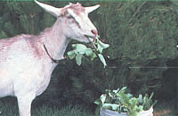

When my family and I moved (finally!) to our farm several years ago, we never could have guessed that our most indispensable piece of homesteading equipment would turn out to be a secondhand, five-gallon, white plastic bucket.
But that's exactly what's happened. As a matter of fact, we get more daily use from our big old pail than we do from just about anything else around our place. But let me make this clear . . . our bucket isn't just any pail. Oh no! In the first place the old container is pretty darned sturdy, because it was initially used to package and store several gallons of food (maybe pickles) for a restaurant. And in-the second place it's inexpensive. In fact, if you can't get one free - as we did - you can usually buy your bucket (once it's empty) from a restaurant owner for the "extravagant" price of a dollar or less. (Building contractors may be another source of supply.)
The light weight and stoutness of these plastic wonders make them ideal for use around the barn . . . in the garden . . . or just about anywhere on the farmstead. For example, my youngsters start the day of by using the bucket to tote fresh water and feed to the goats and pigs . . . and soon thereafter my husband requisitions the white pail to haul weeds from the garden to the compost heap (or to our still-hungry goats).
Once the plot is free of uninvited plants, I like to commandeer the versatile toter to collect our harvest of fresh vegetables, because it holds a lot (without tipping over!) in one load and yet isn't too heavy for me to manage.
After gardening, it's time to go to the kitchen, scrub out my bucket, and mix up a big batch of bread dough in it. No other container will hold enough ingredients to produce the number of loaves it takes to satisfy my bread-loving family for a single week! (I learned this trick, along with an appropriate big-batch formula, from Carla Emery's Old Fashioned Recipe Book... Bantam, 1977.)
I also use the handy helper to gather pinecones for making Christmas decorations . . . to haul spoiled fruit away from the apple tree . . . and to cart pine needles to my strawberry patch. It's perfect as a water bucket in the horse stall, too . . . or as a storage bin for dried beans (provided you've obtained a pail with its airtight lid still intact).
And the list goes on: The ideas offered here likely constitute only a fraction of the chores that this peerless pail can perform. Suffice it to say, then, that our farmstead just wouldn't be up to snuff if that one old bucket weren't hanging around, ready to be pressed into service at a moment's notice!
EDITOR'S NOTE: If you can't find Carla Emery's Old Fashioned Recipe Book at your library or bookstore, it can be ordered - for $12.95 plus 95 cents shipping and handling - from Mother's Bookshelf, P.O. Box 70, Hendersonville, North Carolina 28791.
|
 |
|
|